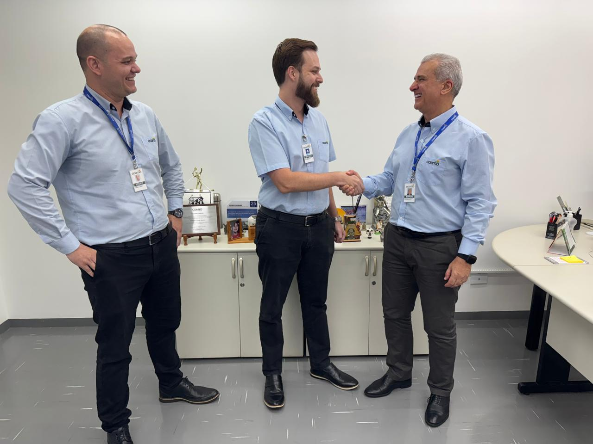

Cultura
Cooperação que se transforma em atitude.
Princípios, valores e comportamentos que orientam o jeito de fazer no dia a dia.
Explore alguns dos pilares que fazem parte da experiência de quem constrói sua trajetória conosco.
Princípios, valores e comportamentos que orientam o jeito de fazer no dia a dia.

Aprendizado e oportunidades em diferentes áreas.
Segurança, qualidade de vida e cuidado no ambiente de trabalho.
Conexão com o cooperado e com a produção.
Operações, produção, manutenção e qualidade.
Estratégia, tecnologia, pessoas e suporte ao negócio.